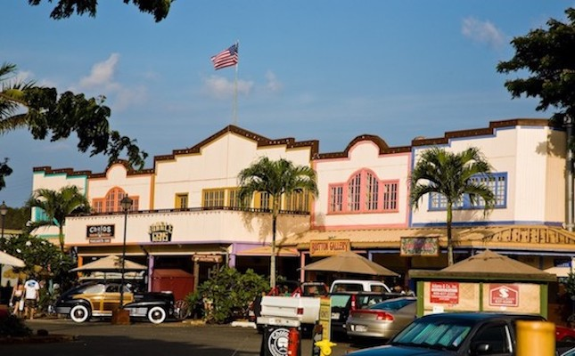

Manaku, The City District. Manaku is the tourist part of Augglandia. All the hotels and shoppes are here in Manaku.
Manaku is the capital of Augglandia, and therefore is where King Auggie lives.
There are many hotels in Manaku but the main one is the Five Seasons. The Five Seasons has four locations around Manaku, but the biggest one is in the center of the city.

Augglandia's Military base sits on the east side of the island, next to the airport and cruise dock. This is because if troops need to get to the mainland (being Mexico and the USA) they wouldn't have to go around the whole island. That being said the Republic of the Augglandian Islands has made allies with the United States of America and Mexico. So the Republic of the Augglandian Islands would most likely never be going to war with the United States or Mexico.